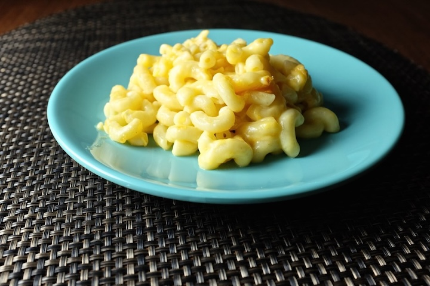

This mac and cheese recipe has been used over and over, time and time again throughout my
entire lifetime. It's your everyday mac and cheese, but with just one small extra tang.
And somehow, that makes it one hundred times better. My mother is always the one who
makes it, and whenever she does, you can almost see the joy and anticipation radiating off
of her. My father absolutely adores
this recipe, and he was ecstatic to tell me:
I love this recipe because it tastes good. Also because it means I don't have to cook dinner.What a moving quote. Anyway, back to business. On this page, I will tell you how to DIY this delicious recipe and enjoy it with your family, friends, strangers, pets, monsters under the bed, or by yourself if you're feeling like a hermit. It makes quite a bit, so you'll likely have leftovers for days!
-JH
| Ingredients | Recipe |
|---|---|
|
|
| Makes about 8 servings. | |
Tips, Tricks, and & Substitutions
|
|